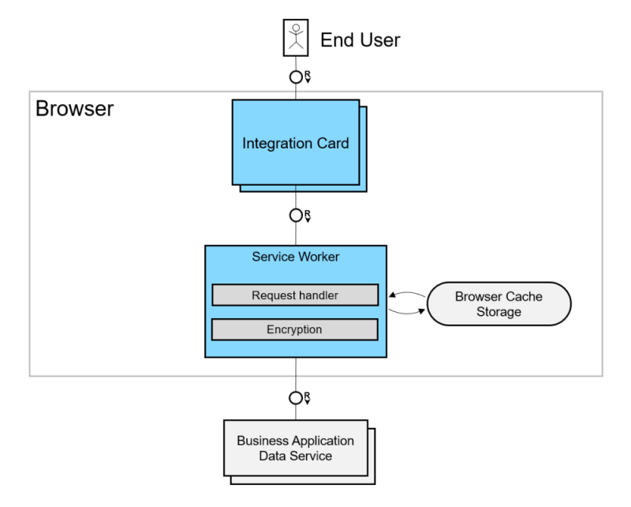

Caching
Card's caching is the process of storing copy of the card's data in the browser's cache, so that it can be accessed by the card more quickly. This process is handled mainly by the host environment.
Overview
The caching is available only if the host environment is prepared and can handle encrypted cache data and understands the cache headers.
The cards will send cache headers in the data request based on their configuration. To enable caching, you should also develop a service worker (script), which is executed by the user’s browser.
The cached data must be encrypted.
Enable Caching
After the host environment is prepared to enable the caching - call the useExperimentalCaching method on the host.
oHost.useExperimentalCaching();
Service Worker
The service worker should handle the fetch event and read the request headers sent by the card to provide the caching.
Cache Headers
The card sends the following cache headers in the request depending on its configuration.
Optionally those can be changed by overriding Host#modifyRequestHeaders method.
| Header | Description | Schema Version | Since |
|---|---|---|---|
| x-sap-card: true | Indicates that this request is sent by a card. Use to activate the caching. | 1.35.0 | 1.94 |
| Cache-Control: max-age=x | Card is configured to accept cache which is newer than the given number of seconds. | 1.35.0 | 1.94 |
| Cache-Control: max-age=x, x-stale-while-revalidate | Card is configured to accept cache which is newer than the given number of seconds. If the cache is stale (older than the number of seconds), the card can still use it during the revalidation. This is the default card behavior. | 1.35.0 | 1.94 |
| Cache-Control: max-age=0, no-store | Cache is disabled and should not be stored in the browser. | 1.35.0 | 1.94 |
Broadcasting on New Data
When fresh data is fetched after revalidation, this should be broadcasted to the cards so that they can repeat the request.
This happens with "postMessage" with the following payload:
{
type: "ui-integration-card-update",
url: request.url
}